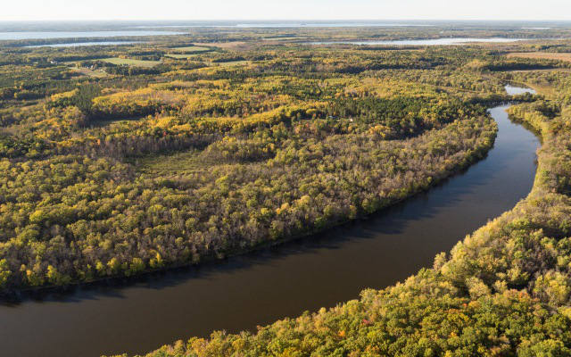
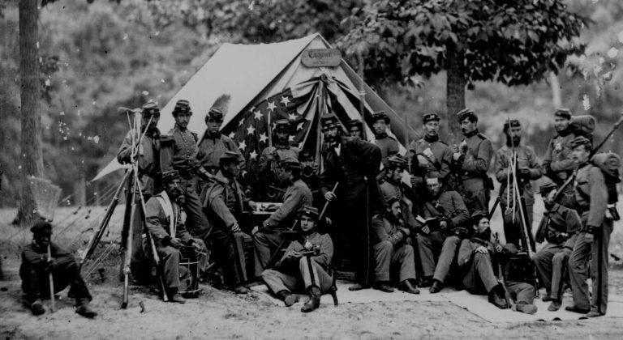
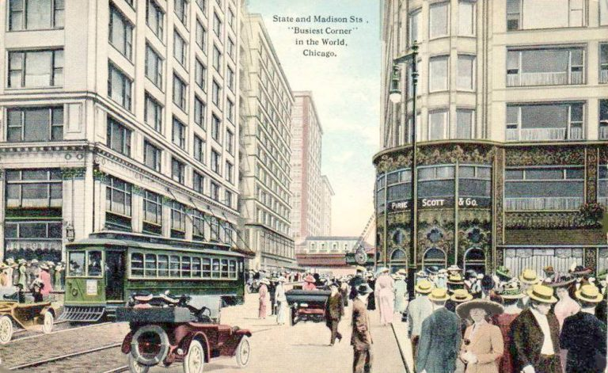
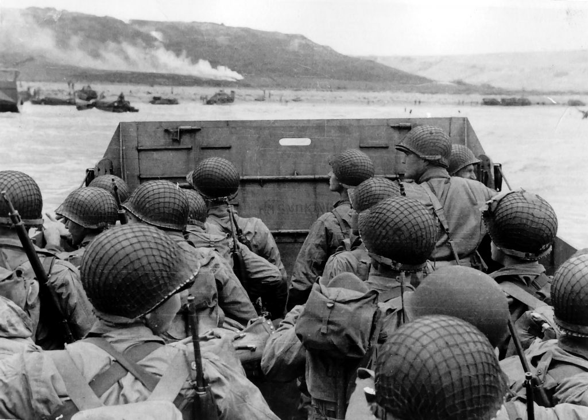
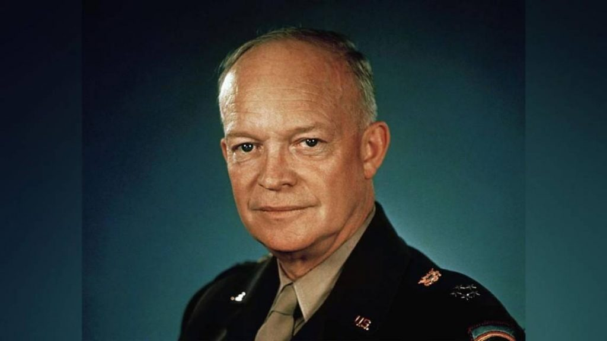
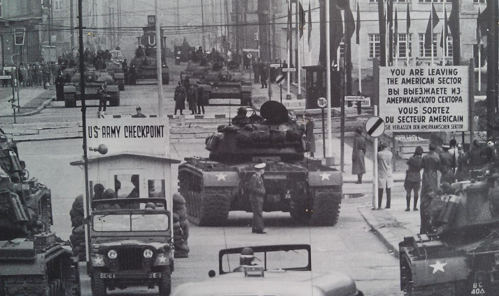
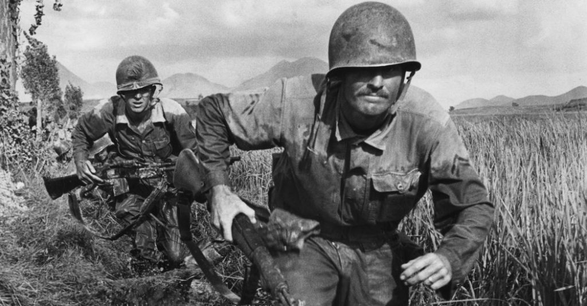
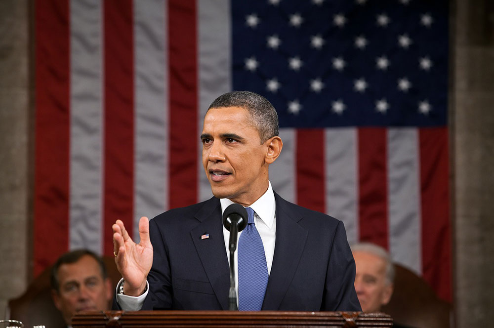

Краткая история США
Америка до открытия европейцами
Первые люди появились на территории современных Соединенных Штатов еще около 13 тысяч лет назад, когда Берингов пролив между Аляской и Азией был либо замерзшим, либо обмелевшим. Эти люди образовали разобщенные и враждующие между собой племена и стали предками американских индейцев.
Первым Америку открыл исландский викинг Лейф Эрикссон еще в 1000 году нашей эры. Он даже попытался колонизировать новые земли, но колонии не прижились. Открытие Эрикссона не оказало существенного воздействия на историю местного населения.
В 1492 году Христофор Колумб повторно открыл Америку для европейцев. Этот факт уже перевернул судьбу континента, Европы и всего мира. Колонизация Америки началась в 1565 году с испанских колоний во Флориде. Затем на новый континент стали прибывать англичане, французы и другие европейцы.
Колонизация Америки англичанами
За пятьдесят лет, прошедших с момента открытия Америки испанцами, они довольно быстро обосновались во Флориде и юго-западе континента. После поражения в 1588 году Непобедимой армады испанцев в сражении с английским флотом, Испания утратила свое влияние и мощь. В Америку устремились колонисты из Англии, Голландии и Франции. Первая колония была основана в 1607 году англичанами на территории нынешней Вирджинии. Переселенцев привлекало золото. Золотая лихорадка гнала сюда бедняков, молодежь, преступников; людей, проповедующих пуританство, заставило перебраться сюда преследование властей. Так, в 1620 году в северной части материка, у мыса Код, высадились 102 «странствующих богомольца». Позже на этом месте был построен город Новый Плимут.
Постепенно на территории Атлантического побережья образовалось тринадцать колоний
1607 – Виргиния (Джеймстаун)
1620 – Массачусетс (Плимут и Поселение бухты Массачусетс)
1626 – Нью-Йорк
1633 – Мэриленд
1636 – Род-Айленд
1636 – Коннектикут
1638 – Делавэр
1638 – Нью-Гемпшир
1653 – Северная Каролина
1663 – Южная Каролина
1664 – Нью-Джерси
1682 – Пенсильвания
1732 – Джорджия
На территории колоний проживали два основных племени из числа коренных индейцев, – алгонкины и ирокезы. Их насчитывалось около 200 000 человек. Они научили колонистов всему, что помогло тем выжить в незнакомых условиях: расчищать территорию для посевов, выращивать маис и табак, охотиться на диких зверей, печь моллюсков. Европейцы скупали у коренных жителей пушнину за копейки, а остров, где находится центральная часть Нью-Йорка – Манхэттен, был куплен за набор ножей и бус, стоимостью всего… 24 доллара!!!

Война за независимость
Еще в 1754 году Бенджамин Франклин создал проект союза английских колоний в Америке с собственным правительством. Он предложил Великобритании назначать своего президента, чтобы метрополия сохраняла свою власть. Но Лондону эта инициатива не понравилась.
В 1773 году американцы провели в Бостоне акцию протеста «чайному закону», который незадолго до этого принял британский парламент. Этот закон нарушал права колонистов, так как увеличивал пошлины на британский чай. В ответ американцы уничтожили британский груз с чаем. Это событие стало известно как «Бостонское чаепитие» и послужило толчком для войны за независимость.
В 1774 году в Филадельфии был собран Первый Континентальный конгресс английских колоний. В нем в числе прочих принимал участие Джордж Вашингтон. Делегаты сформулировали требования в Великобритании, но Лондон отреагировал резко отрицательно и потребовал полностью подчиниться. Американцы поняли, что пора бороться за независимость, используя основную силу – единство.
В 1776 году английские колонии создали Континентальную армию и назначили генералом Вашингтона. Так началась война за независимость, которую в американской литературе чаще называют American Revolution – Американской революцией. Созванный во второй раз Конгресс принял Декларацию независимости, которая легла в основу конституции будущих США.

Британский король отправил войска в Америку для подавления восстания. Британцам удалось занять Нью-Йорк и Филадельфию. Сначала американцам приходилось тяжело, они проигрывали сражения и отступали. Первая победа колонистам досталась в битве при Саратоге. Затем американцы заручились поддержкой Франции и Испании, благодаря чему получили преимущество.
Британцы захватили Джорджию и Чарльстон, но не могли продвинуться вглубь, сохраняя контроль лишь над портовыми городами. Американцы развернули успешную партизанскую войну, благодаря чему победили англичан и лоялистов, которые хотели сохранить зависимость от метрополии. В 1781 году британский флот оказался в ловушке в Чесапикском заливе и сдался Вашингтону. К тому времени Великобритания уже перестала поддерживать войну.
В 1782 году британская Палата Общин проголосовала за прекращение войны. Великобритания начала переговоры с колониями, по итогам которых заключила мир и признала независимость Соединенных Штатов Америки. США отказались от претензий на Канаду и западный берег Миссисипи.
Экспансия США
После войны за независимость границы Штатов проходили по Великим озерам на севере, реке Миссисипи на западе и испанской Флориде на юге. Северо-западные территории перешли к США в 1795 году после подписания мирного договора с индейцами.
Америка начала активный период расширения своих земель. Новая страна объясняла свой экспансионизм крылатым выражением Manifest Destiny – Явное предначертание. Идея богоизбранности была американским оправданием для своих амбиций распространить территорию США до самого Тихого океана. Индейцам было сложно противостоять американцам, так как Великобритания прекратила поддержку местного населения.
В 1803 году американцы провернули удачную сделку, которую назвали Луизианской покупкой: они приобрели у Франции огромную территорию, на которой сейчас находятся штаты Арканзас, Оклахома, Айова, Миссури, Небраска, Канзас и другие. Берега реки Миссисипи полностью перешли в распоряжение США.
Американцы покидали обжитые восточные земли, переходили Миссисипи и искали новые регионы для жизни. Они осваивали Великие равнины, лесные массивы Орегона, степные просторы Техаса, богатые земли Калифорнии. По континенту курсировали целые караваны из фургонов, запряженных быками. Калифорнийская золотая лихорадка увеличила приток переселенцев.
В 1845 году мексиканский Техас перешел к США. В 1846 году США объявили войну Мексике, разгромили мексиканскую армию и заняли столицу страны. Мексиканцам пришлось уступить почти половину территории своего государства – часть штатов Аризона и Нью-Мексико.
Гражданская война (1861-1865)
Во второй половине XIX века противоречия между Югом и Севером достигли своего пика. Традиционно главной причиной Гражданской войны в США называют желание северян освободить рабов, трудившихся на плантациях Юга. На самом деле перечень причин был намного шире:
- недовольство северян тем, что Юг ведёт самостоятельную торговлю хлопком через океан, обходясь без посредничества предпринимателей с Севера;
- недостаток свободных рабочих рук на предприятиях Севера;
- желание Линкольна установить федеральный контроль над свободолюбивым Югом;
- разница менталитетов (южане — потомственные аристократы; северяне — дельцы).
На то, что истинным мотивом северян были вовсе не человеколюбивые порывы, указывает и тот факт, что рабовладельческие штаты были и вне Конфедерации (например, Мэриленд).
Первый вооружённый конфликт между сторонниками рабовладения и аболиционистами (активистами, защищавшими права чернокожего населения) произошёл в 1858 году в Канзасе, где вопрос о введении рабства должны были решать местные власти.
Выборы 1860 года разделили всю страну на два враждебных лагеря. В итоге, президентом стал республиканец Авраам Линкольн, который в ту пору хотя и не выступал резко против рабовладения, но полагал, что рабство нельзя распространять на новые западные земли. На Юге на весть об избрании Линкольна ответили созданием Конфедерации Южных Штатов, вышедшей из состава США. Линкольн заявил, что будет бороться за целостность страны и не допустит распространения рабства на западе, но не станет покушаться на сложившиеся на Юге порядки.
Первый бой между конфедератами и сторонниками Союза Северных Штатов состоялся весной 1861 года за форт Самтер. Чтобы истощить Юг, северяне решили установить морскую блокаду Конфедерации. Сначала контролировать огромное побережье с помощью всего 40 кораблей было очень сложно. Но постепенно флот Севера разросся и торговля Юга с зарубежными странами практически полностью пресеклась.
Начало 1862 года прошло удачно для северян, поэтому генерал Грант, руководивший войсками Союза, перестал здраво оценивать противника, за что поплатился в битве при Шайло. Прочем, союзники сумели нанести ответный удар и после кровопролитного боя занять железнодорожную станцию Коринф в Кентукки. Весной южане потеряли такие важные прибрежные города как Новый Орлеан и Мемфис. Впрочем, конфедераты под руководством Джексона позже сумели остановить наступление северян на востоке, но сами так и не смогли выдвинуться единым фронтом на Север.
В первой половине 1863 года удача сопутствовала южанам, тем более, на Севере начались массовые антивоенные выступления. Однако в кровавой битве при Геттисберге генерал Ли, возглавлявший конфедератов, потерял 30% своих людей и был вынужден отступить. Между тем, северяне во главе с генералом Грантом установили контроль над всей рекой Миссисипи.
В 1864 году армии Гранта и Шермана двинулись на Юг, чтобы окончательно сломить сопротивление конфедератов. Итогом этих событий стала потеря южанами Атланты.
1865 стал последним годом войны. Конфедераты страдали от недостатка боеприпасов и продовольствия. Своему руководству они больше не доверяли, все резервы Юга были исчерпаны. В апреле в городке Аппоматтокс генерал Ли был вынужден капитулировать. Война завершилась победой Севера.
Потери в Гражданской войне были огромными: с каждой стороны было убито по несколько сотен тысяч человек. После войны рабство в США было отменено: соответствующая поправка к конституции появилась в 1865 году.
Реконструкция
Период восстановления страны – в частности, ее южной части – продолжался более двадцати лет после войны. Он известен как эпоха Реконструкции. В это время американская конституция дополнилась несколькими поправками, которые расширили права темнокожего населения. Реконструкция затронула общественные и управленческие изменения Юга. Например, закон о гомстедах способствовал развитию фермерского хозяйства.
В 1877 году Демократическая и Республиканская Партии США, представлявшие права Юга и Севера соответственно, сделали ряд уступок друг другу. Республиканцы вывели федеральные войска из южных штатов и приняли законы об ограничениях прав афро-американцев. Действующий президент из партии республиканцев Резерфорд Хэйс пообещал не баллотироваться на второй срок. Северяне вызвались помочь в постройке железной дороги через Техас и индустриализировать южные штаты. Демократы, в свою очередь, обязались уважать права негров и признать Хейса легитимным президентом. Эта устная договоренность называется Компромиссом 1877 года. На ней официально закончился период Реконструкции.
После Гражданской войны и Реконструкции США начали активно развиваться. Этот период называют позолоченным веком. Многие экономисты и историки считают, что именно в это время была заложена современная американская экономика. Промышленность и сельское хозяйство росли огромными темпами, появлялись крупные корпорации, население быстро увеличивалось, из других стран приезжали иммигранты.
В конце 19 века душевой доход США превышал британский, германский и французский. На северо-востоке страны образовались крупные индустриальные города с огромными заводами. Появились профсоюзы рабочих, в том числе Американская федерация труда. Именно в это время возникли династии мультимиллионеров – Рокфеллеров, Асторов, Карнеги.
Позолоченный век в США закончился в 1893 году, когда страну охватил экономический кризис. В 1896 году произошли одни из самых драматичных американских выборов в президенты: республиканец Мак-Кинли победил демократа Уильяма Дженнигса Брайана с перевесом в 4,3% голосов. Так начался новый период в истории США, который называют эрой прогрессивизма.
США до Мировых войн
На рубеже в XIX-XX веков США стабильно развивались без особых потрясений. Основными тенденциями этого периоды были:
- стабилизация политической системы, баланс между республиканцами и демократами;
- рост крупного бизнеса;
- урбанизация;
- рост числа иммигрантов.
США превратились в мощную индустриальную державу с высоким уровнем жизни. Впрочем, оставались и некоторые социальные проблемы: большой разрыв между богатыми и бедными, а также пассивность политических лидеров, заведших страну на путь стагнации.
Однако мир менялся и общество тоже. Так в Америке возникли движения прогрессистов (сторонников социальных реформ, сильного правительства и сплочения общества) и суфражисток. Хотя в обществе существовали такие, вполне демократические взгляды, отношения белых с чернокожим и коренным населением Америки оставались напряжёнными, о чём свидетельствуют расистские законы Джима Кроу.
США в период Первой Мировой войны

Наступление Первой Мировой войны (1914-1918) разрушило планы американцев по установлению своего влияния на Кубе и Гавайев. Президент Вильсон призывал американцев сохранять нейтралитет и не вмешиваться в европейские дела. Однако это было невозможно, поскольку мировые воды стали полем для военных действий. Германия производила атаки на французские и английские суда, где находились американские граждане. К тому же мощь другого государства в Атлантике никак не могла понравиться Вильсону и его кабинету. А после того как в 1917 году была перехвачена телеграмма, отправленная немецким правительством в Мексику, где прямо говорилось о намерениях атаковать США, нейтралитет стал в принципе невозможен. В апреле 1917 США вступили в Первую Мировую войну.
Всего на Западном и Итальянском фронтах воевали около 4 млн. американцев. В январе 1918 года Вильсон предложил свой вариант мирного договора, который должен был, по его мнению, стать основой для всей международной политики будущего. Документ предусматривал свободу торговли, право наций на самоопределение, отказ от теневой дипломатии и т. д. Защиту этих принципов должна была осуществлять организацию под названием Лига Наций. Страны Антанты отвергли этот проект и предложили более жёсткий договор. Поэтому проект Вильсона остался лишь красивой утопической идеей.
Великая депрессия
1920-1941 годы характеризовались отходом от идей прогрессистов. Основными принципами этой эпохи стали индивидуализм и децентрализация. Это дало толчок развитию частной инициативы и экономическому буму. «Ревущие двадцатые» стали символом роскоши, широты взглядов и новых идеалов. Однако в 1929 году Америка погрузилась в глубочайший экономический кризис за всю историю страны. Основными причинами Великой депрессии были:
- перепроизводство;
- недостаточное потребление;
- неравномерное развитие разных отраслей производства;
- нездоровый ажиотаж вокруг покупки акций (котировки крайне редко отражали истинные финансовые дела компаний).
Великая Депрессия разразилась вскоре после того, как пост президента занял Герберт Гувер. Поэтому народная молва обвинила в экономическом крахе нового президента. Однако именно Гувер наметил первые верные шаги по ликвидации негативных последствий Депрессии: организовывал массовые работы, поддерживал крупные предприятия и банки, приостановил выплату государственного долга и т. д.
Но поскольку естественный подъём экономики начался только при Теодоре Рузвельте, именно он вошёл в историю как спаситель нации. Для реанимации экономики Рузвельт разработал свой «новый курс», который фактически был переработкой идей Гувера. К 1939 году последствия Депрессии оказались окончательно преодолёнными и американская экономика подготовилась к новому взлёту.
США в период Второй Мировой войны
Из-за Великой Депрессии и разочарованности после Первой Мировой войны американцы с крайним недовольством относились к идее повторного вмешательства в дела Европы. При этом президент Рузвельт понимал, что нацистский режим может представлять серьёзную угрозу для его страны и желал как-то повлиять на общественное мнение.
В 1939-40 годах США оказывали Европе исключительно материальную поддержку (так появилась система ленд-лиза). Непосредственно к военным действиям Америка перешла только после японской атаки на американскую базу Перл-Харбор в декабре 1941.
В то время как советские войска вели бои на территории своей страны, американские и британские армии боролись с нацистами и их союзниками в Средиземноморском регионе. В 1943-44 годах Великобритании и Америке удалось ликвидировать Муссолини и дойти до Рима, выведя Италию из войны. В 1943 году на встрече в Тегеране лидеры «Большой Тройки» договорились об открытии второго фронта в Европе. Операция по высадке десанта в Нормандии проходила летом 1944 года и получила название «Оверлорд». Операцией командовал Дуайт Эйзенхауэр — талантливый организатор и опытный военный. Быстрой победы, на которую рассчитывали союзники, добиться не получилось: Гитлер сумел подготовить план контрнаступления в Арденнах и приступил к его выполнению в декабре того же года. Битва в Арденнах длилась два месяца и стала самой кровопролитной в американской истории. Однако усилия не прошли зря, войска нацистов были разбиты и на западном фронте война фактически закончилась.
Если на западе участие американцев в войне было относительно небольшим, то на Тихом океане основные тяготы войны легли именно на США. Борьба с Японией была тяжёлой и затяжной, но ближе к концу войны наметился определённый перелом. Летом 1945 года было принято решение испытать на Японии два образца новейшего оружия, разработанного физиками-ядерщиками, при условии, что японское правительство отвергнет предложение о капитуляции. В итоге, произошла всемирно известная трагедия в Хиросиме и Нагасаки. Споры о том, насколько оправданным был такой шаг американских военных ведутся и по сей день.
«Холодная война»
США были единственным государством, вышедшим из Второй Мировой войны не только не разорённым, но и ещё более богатым и развитым, чем в довоенный период. Вынужденное сотрудничество США и СССР в годы войны теперь сошло на нет и постепенно превратилось в противостояние. Каждая из держав была достаточно авторитетна и мощна для того, чтобы претендовать на мировое лидерство. Кроме того, американцы и советские граждане исповедовали абсолютно разные, даже противоположные друг другу ценности. В США полагали, что СССР стремиться к установлению коммунизма во всей Евразии, а в СССР, что США использует ленд-лиз и систему международных займов как орудие для распространения своего влияния в других странах.
Дальнейшую американскую внешнюю политику определили:
- «Доктрина Трумэна» (США заявляли, что они имеют право защищать угнетаемые народы Европы);
- «План Маршалла» (выдача займов европейским странам);
- политика «сдерживания» (недопущение дальнейшего распространения коммунизма).
«Холодная война» была важнейшей причиной воздвижения Берлинской стены, долгого разделения Германии и ряда других событий в разных точках мира.
В годы Корейской войны (1950-1953) «холодная война» фактически на какое-то время перешла в свою «горячую» фазу: ведь на стороне Южной Кореи сражались американские солдаты, а на стороне Северной — советские. Однако своих целей США в регионе добиться не удалось. Война принесла разочарование американскому обществу и привела к падению авторитета Гарри Трумэна. Следующим президентом стал республиканец, герой Второй Мировой войны — Дуайт Эйзенхауэр. Эйзенхауэр также был сторонником политики «сдерживания», но поначалу действовал иными методами. Он решил, что самые важные внешнеполитические акции лучше проводить скрытно, поэтому решил делать главную ставку не на войска, а на сформированное в 1947 году ЦРУ. ЦРУ способствовало перевороту в Иране и поддерживало действия французов во Вьетнаме.
С приходом к власти Хрущёва отношения между двумя странами значительно потеплели. Однако в 1957 году США постигло горькое разочарование: СССР запустил на орбиту Земли первый в мире искусственный спутник, продемонстрировав значительное технологическое превосходство. А в 1959 году на Кубе победила коммунистическая революция и к власти пришёл Фидель Кастро. Окончательно наметившееся было сотрудничество между двумя странами разрушил инцидент в мае 1960 года, когда советские ракетчики сбили над территорией своей страны американский самолёт-шпион.
Несмотря на напряжённую международную обстановку, «красную истерию» и то, что огромные суммы из бюджета уходили на военные нужды, 1945-1980 годы были для Америки эпохой процветания.
- Значительно выросла покупательная способность населения;
- Правительство стимулировало частную инициативу и предоставляло рабочие места;
- Появились первые компьютеры, начались эксперименты по созданию беспроводных сетей связи;
- В 1958 году появилось НАСА, а 11 годами позже произошла первая высадка человека на Луне;

Новая эпоха в истории Америки наступила с приходом к власти в 1961 году Джона Кеннеди. Он планировал продолжать политику «сдерживания», но использовать не военные, а экономические методы давления. Однако проблемное наследие Эйзенхауэра всё равно давало о себе знать. Задуманный предыдущим президентом проект вторжения в коммунистическую Кубу едва не привёл в 1962 году к ядерной войне между США и СССР. К счастью всего мира, две державы сумели договориться и решить вопрос мирно.
Пришедший на президентский пост после гибели Кеннеди Линдон Джонсон был настроен на милитаризацию и расширение сферы влияния США за рубежом. После провала высадки американских морпехов в Доминикане, президент сосредоточился на Юго-Восточной Азии, намереваясь остановить распространение коммунизма во Вьетнаме. Но Вьетнамская война оказалась намного сложнее и изнурительнее, чем сначала думали американцы. Военные неудачи сказались на авторитете Джонсона и на следующих президентских выборах 1968 года победил Ричард Никсон.
Никсон выступал за улучшение отношений с СССР и КНР, но одновременно заявлял, что весь мир является зоной интересов США. Американцы избрали президента, поскольку он обещал быстро закончить Вьетнамскую войну, однако, она продолжалась. При этом Северный Вьетнам и поддерживавшие его советские солдаты имели явный перевес в регионе. В Америке поднялась волна антиправительственных, пацифистских выступлений, что заставило Никсона признать поражение в войне и срочно закончить военные действия.
Новый президент — Джеральд Форд — подхватил внешнеполитическую концепцию предыдущей администрации. При этом он сделал серьёзный шаг на пути к международной разрядке: при нём были подписаны Хельсинские соглашения 1975 года, оберегавшие государственный суверенитет и права человека.
Преемник Форда — Джимми Картер — был идеалистом, он верил, что США смогут быть справедливым стражем мира и порядка. Однако этим он не добился популярности ни у сторонников применения силы за рубежом, ни у пацифистов, считавших Картера лицемером. Окончательный удар по авторитету Картера нанесли два события: пленение американских дипломатов в Тегеране и ввод советских войск в Афганистан в 1979. К 1980 году большинство политиков и граждан поняли, что агрессивная и дорогостоящая милитаристская политика себя не оправдала.
В эту тревожную и неспокойную эпоху к власти пришёл убеждённый консерватор Рональд Рейган — сторонник ограничения государственного вмешательства в экономику и любитель громких заявлений. При Рейгане значительно увеличился госдолг США, произошёл обвал фондовой биржи и началась инфляция. Внешняя политика также была крайне неоднозначной: жёсткое отношение Рейгана к коммунизму не помешало ему наладить отношения с Михаилом Горбачёвым. Перемены в СССР отвлекли внимание американцев от Москвы, теперь главным внешнеполитическим интересом США был Иран.
Новейшая история США
В 1988 году хозяином Белого Дома стал Джордж Буш-старший — продолжатель политики Рейгана. Мало зависевшие от Америки восточноевропейские процессы, направленные на установление демократии, стали символом торжества американских ценностей над коммунизмом. Важной проблемой для Буша стал конфликт с Саддамом Хуссейном — лидером Ирака, бывшим союзником США. Из-за внешнеполитических неурядиц Буш перестал заниматься внутренними делами страны, что привело к экономическому спаду, введению новых налогов и, в конце концов, потере президентского кресла.
Со времён Джимми Картера лидерами Америки были республиканцы. Но в 1992 году на выборах победил демократ Билл Клинтон. Главным его предвыборным лозунгом была забота об экономике. Клинтон пытался лавировать между двумя партиями, но его двоякая политика, неудачи в отношениях с другими странами и многочисленные скандалы, связанные с ним и его семьёй, привели к проигрышу на выборах 2000 года.
В президентском кресле снова оказался республиканец – Джордж Буш-младший. Он выступал за расширение социальных программ и уменьшение налогов для простых американцев. С самого начала своего президентства Бушу-младшему пришлось бороться с террористической угрозой. Сначала по многим крупным офисам США были разосланы конверты с сибирской язвой, а в 2001 году саудовский террорист Усама бен Ладен организовал теракт в Нью-Йорке. В том же году по США начали борьбу с базировавшимся в Афганистане движением Талибан, члены которого предоставили убежище бен Ладену. А в 2003 году начались боевые действия против Саддама Хуссейна. Буш-младший был активным сторонником размещения элементов ПРО США в странах Восточной Европы и СНГ. Несмотря на постоянно падающие рейтинги, Буш-младший сумел сохранять за собой пост президент в течение двух сроков, пока в 2009 не был вынужден уступить его демократу Бараку Обаме.
Для многих американцев Обама был символом новой прогрессивной вехи в истории Америки. Большинство его внутриполитических реформ были направлены на расширение прав и упрочение положения граждан: увеличение числа медицинских услуг, покрываемых страховкой; разрешение однополых браков; уменьшение налогов. Обаме наконец удалось устранить одного из самых известных террористов за всю мировую историю – Усаму бен Ладена и начать налаживать отношения с Москвой. Впрочем, многие американцы вскоре разочаровались в своём президенте. Хотя Обаме удалось получить Нобелевскую премию мира, он очень долго не мог закончить военные операции в Ираке и Афганистане, что вызвало недовольство его электората, а также организовал военное вторжение в Ливию. Отношения с Россией также обострились. В 2017 году после двух президентских сроков Обама уступил Овальный кабинет республиканцу Дональду Трампу – известному предпринимателю и телеведущему.